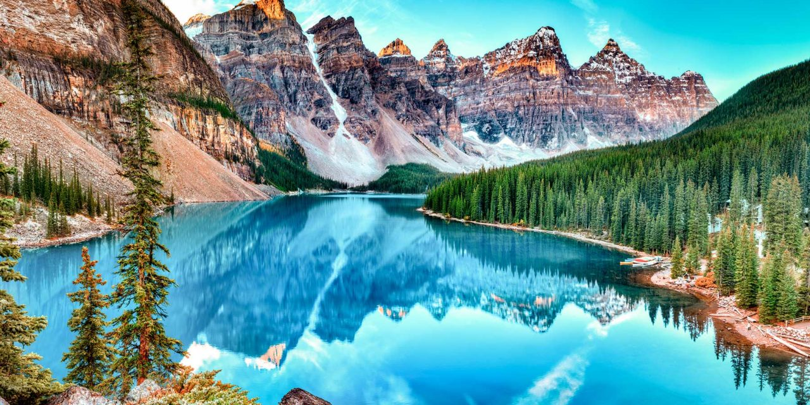

Nací el 13 de Abril del año 2000 en Nezahualcóyotl, Estado de México.
Lugares que me gustaría visitar:
- CANADÁ
- Desde pequeño me ha llamado la atención los lugares en donde cae nieve, además de que tiene paisajes muy bonitos que me gustaría poder observar personalmente. 
- FRANCIA
- Al igual que canadá, Francia tiene paisajes muy bonitos y posee uno de los monumentos (que en mi opinión) es de los más llamativos e interantes de observar, por eso quisiera visitar ese país algún día.
- EGIPTO
- Me guastaría poder ver las pirámides en persona, para así poder contemplar las dimensiones y majestuosidad de las mismas.
- ESPAÑA
- Este ya tiene un motivo más personal, y es una promesa que le hice a alguien muy especial para mi.